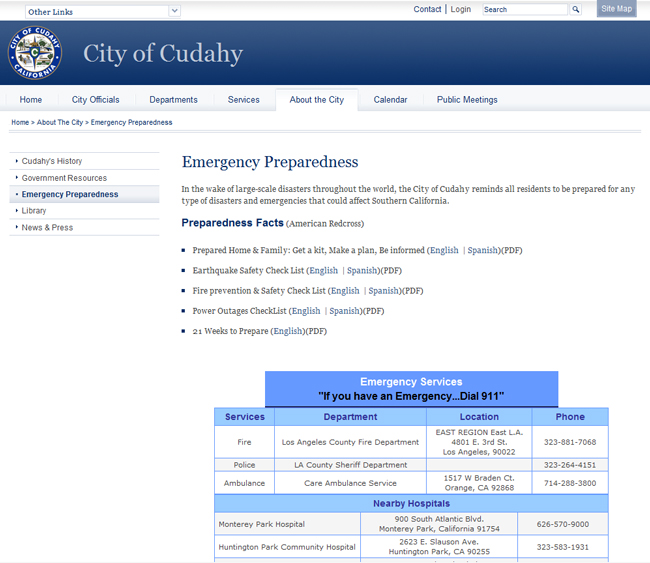
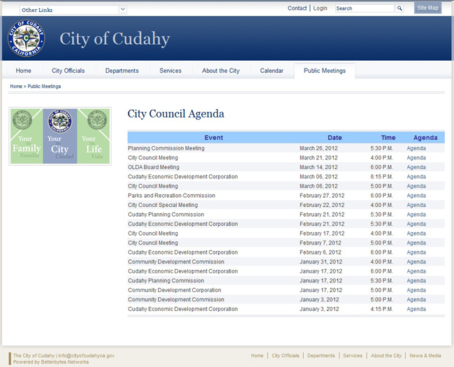
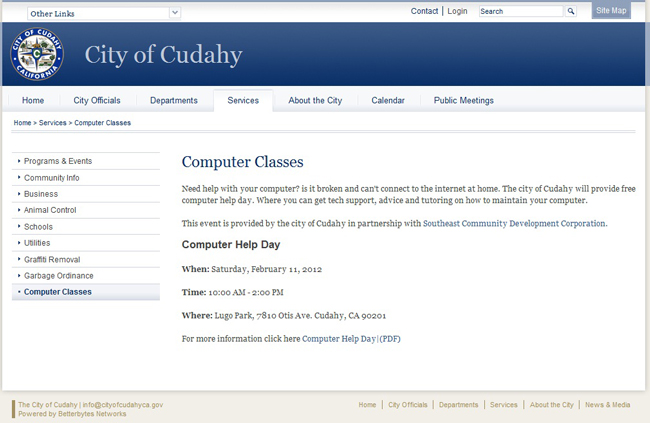
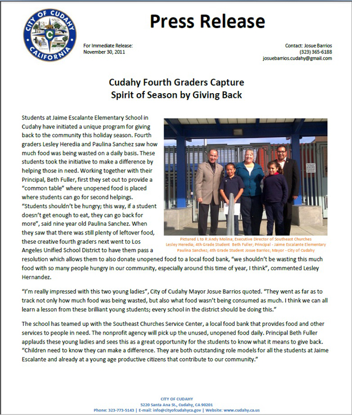

<div class="col-md-9 style-page">
    <article>
        <section>
            <h1>
                City of Cudahy
            </h1>
            <h3>Assistant Web Master</h3>
            <h4>Internship | November 2011 - December 2012</h4>
        </section>
        <section>
            <h2>Skills</h2>
            <p>
                HTML, CSS, Javascript, Classic, ASP, Vbscript
            </p>

        </section>
        <section>
            <h2>Description</h2>
            <p>
                The City of Cudahy is located Southeast Los Angeles next to the L.A. River. I started internship at the City of Cudahy on November 2011 through December 2012. While being on this internship I have had the opportunity to assist the city’s website webmaster by updating and creating new content. This internship has also helped me put in practice my HTML and CSS skills and learn new skills such as vbscript and classic asp.
                you can visit the website at <a href="http://www.cityofcudahy.com">www.cityofcudahy.com</a>
            </p>
        </section>
        <section>
            <h2>Accomplishments</h2>
            <p>
                One of my task is to create new content such as new webpages, add content to existing webpages among others. To maintain consistency I used everything that was already available such as css classes, other webpages, etc.
                <br><br>
                Here are some new content that i created:
            </p>
            <h4>Emergency preparedness</h4>
            <p>
                This webpage contains useful information to help the citizens of cudahy prepared for natural disasters and the information about local emergency services. I gather information about earthquakes and other natural disasters preparedness at the red cross website. i was able to obtain pdf guides both in english and spanish

            </p>
            


            <h4>Public Meetings</h4>
            <p>
                This page contains all the agendas of the city council meetings and its being updated constantly. I upload new agendas as they become available.

            </p>
            
            <h4>Computer Classes</h4>
            <p>
                This page was created to advertise the different computer classes that the city will be offering throughout the year.

            </p>
            
            <p>
                Other content that i have created is a Press release, basically I created the header for the release and manipulated the picture by requirements the text was provided by the city manager.

            </p>
            
            <p>
                You can see more content that i have added to other webpages by visiting this links<br><br>
                <a href="http://www.cityofcudahy.com/about/news.asp?expanddiv=vec2">http://www.cityofcudahy.com/about/news.asp?expanddiv=vec2</a><br>
                <a href="http://www.cityofcudahy.com/about/news.asp?expanddiv=vec">http://www.cityofcudahy.com/about/news.asp?expanddiv=vec</a>
            </p>
        </section>
    </article>
</div>
